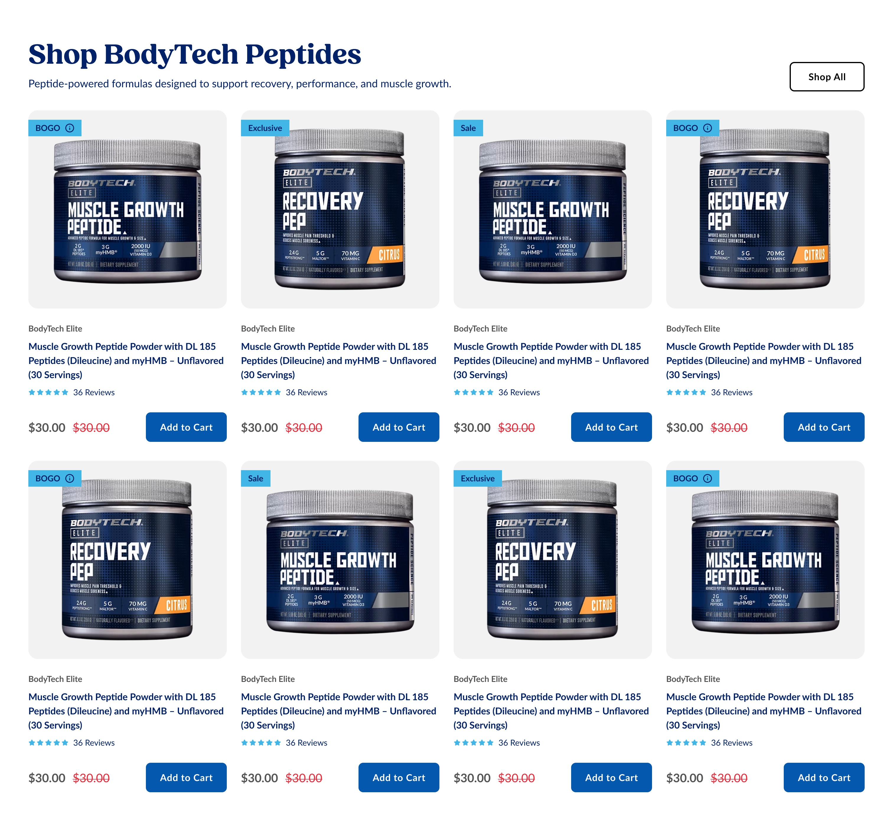
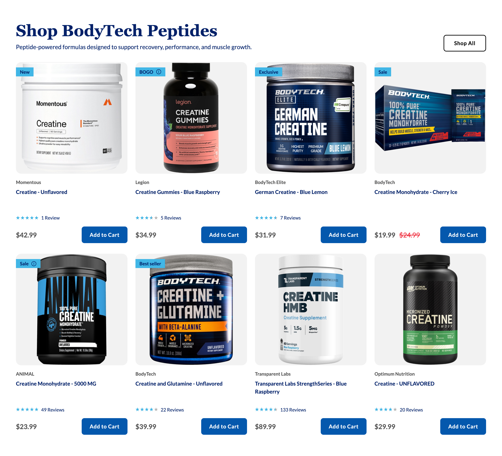
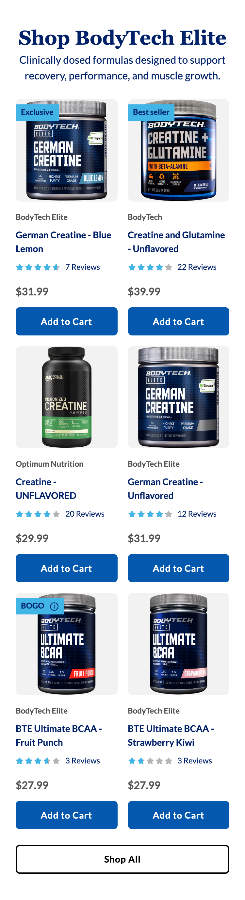
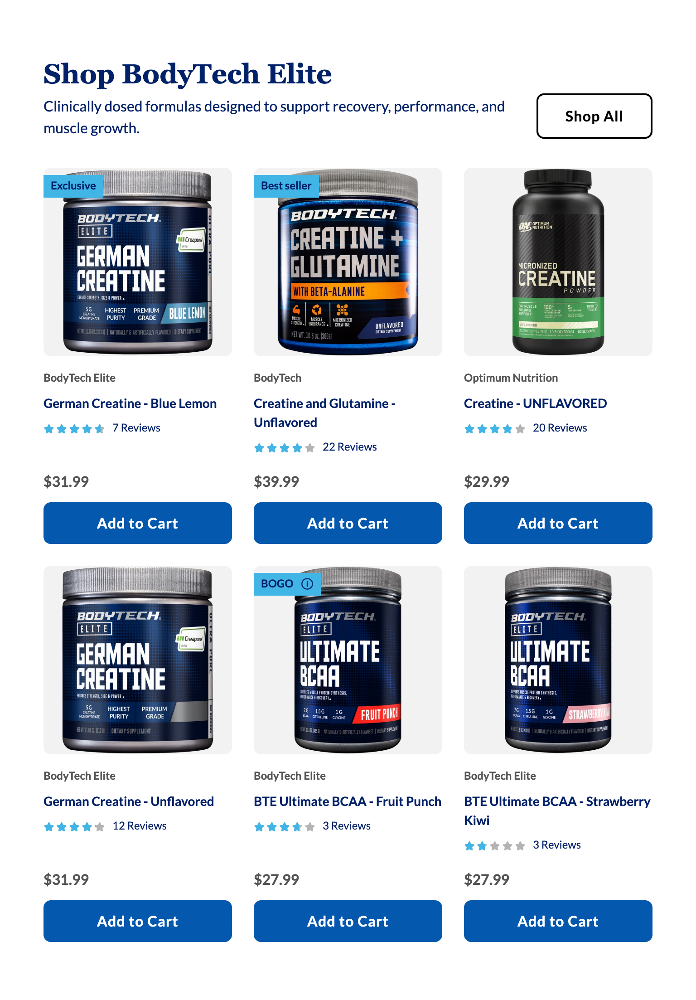
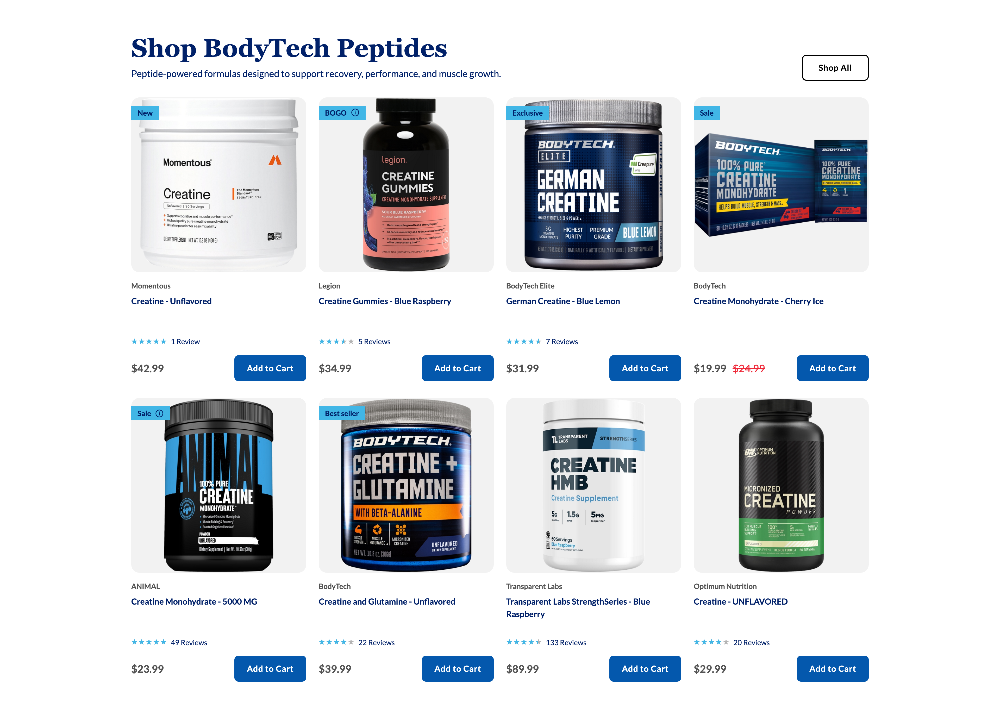

Platter component
Product Grid
The client's spec, reproduced verbatim in substance from Confluence page
Spec: https://getplatter.atlassian.net/wiki/spaces/TVS/pages/897220609/FSD+Product+Grid
02 — Screenshots
How it renders
Wipe the handle across the design to find where the build drifts from it. The Figma frame and the capture are exported at the same width, so anything that moves under the handle is a real difference. Every width is below as a plain capture.





03 — Fields
What a merchandiser fills in
Generated from _schema.ts, in the order Amplience shows them.
| Field | Type | Constraints | Description | |
|---|---|---|---|---|
headingHeading |
string | required | max 90 min 1 |
The headline above the grid, usually the collection or the brand the products share. It sits on one line on a desktop and wraps to a second on a phone at around 22 characters — the grid then starts further down the page, which is a layout choice rather than an error. Wrap words in _underscores_ for italic and **double asterisks** for bold. Write ~12~ for subscript; a registered mark (®) is raised automatically, and a plain asterisk is never formatting. |
headingLevelHeading level |
string | h1 · h2 · h3default "h2" |
Choose h1 only if this module is the first thing on the page and no other h1 exists. Otherwise leave it as h2 — two h1s on one page hurts SEO. Choose h3 when the module sits underneath a section that already has an h2, so the page's heading order stays unbroken. This changes nothing you can see: the size is set separately below. | |
headingSizeHeading size (desktop / mobile) |
string | 64px / 38px · 56px / 34px · 48px / 30px · 36px / 24px · 28px / 20px · 20px / 16pxdefault "48px / 30px" |
A fixed pair from the TVS type scale — the first size applies from tablet up, the second on phones. | |
headingFontHeading font |
string | Lato · corisanderegular · Fieldsdefault "Fields" |
Fields is the serif this module is designed in and is the default. It is not yet installed on vitaminshoppe.com, so until it is, the heading falls back to Georgia — still a serif, but not the exact drawn face. Pick Lato if you would rather the heading match the rest of the site exactly than approximate the design. | |
bodyDescription |
string | max 220 | One or two sentences under the headline, describing what the collection is for. It wraps rather than truncating, and each extra line pushes the grid down the page. Leave empty to hide it. | |
skusProducts (SKU ids) |
array | required | The products this grid shows, in the order you list them. Enter TVS SKU ids exactly as they appear on the product page, e.g. VS-4612. Everything on each card — image, brand, name, price, rating — is pulled live from the product record, so there is nothing else to fill in here. Two to eight products: eight fill two rows of four on a desktop, but only the first six appear on a tablet or a phone, so a seventh and eighth product are seen on desktop only. A SKU that no longer exists is skipped without a message, so open the page after saving if you see fewer cards than you added. | |
showRatingShow star ratings |
boolean | default true |
Shows the star rating and review count on every card in this module. Switch off for a range where reviews are thin or missing — a card with no rating leaves a gap the others do not have, so it reads better with ratings off for the whole module than on for some of it. | |
cardOverridesCard overrides |
array | Optional, per-SKU decoration. Each row names one SKU from the list above and replaces that card's automatic badge. Cards without a row here are untouched, and a row for a SKU that is not in the list does nothing. | ||
ctaLabelButton label |
string | max 30 | The label on the button, e.g. "Shop All". It sits to the right of the headline on a desktop and moves below the grid, full width, on a phone. Keep it to two or three words: the button hugs its label, so a long one eats into the space the headline has beside it. The button only renders when both a label and a link are set. Formatting: **bold**, _italic_, and ~12~ for subscript. A registered mark (®) is raised automatically, and a plain asterisk is never formatting. | |
ctaUrlButton link |
string | max 500 | Where the button goes, typically the full collection page. Use a relative path for vitaminshoppe.com destinations. The button only renders when both a link and a label are set. | |
ctaStyleButton colour |
string | dark · light · outlinedefault "outline" |
Outline is transparent with a black edge and black text, and is the design. Dark is #0458AD with white text, which reads as the main action on the page — pick it only when this grid is the thing you most want a shopper to act on. Light is white with #0458AD text and needs a dark surface behind it, so on this module's white background it all but disappears. | |
sectionIdSection ID |
string | max 50^[a-z][a-z0-9-]*$ |
A name for this specific module, used for two things. A link anywhere on the site can jump straight to it by ending the URL with # and this name, e.g. #shop-peptides. Page-level CSS can also target this one module rather than every product grid. Use lowercase letters, numbers and hyphens, start with a letter, and make it unique on the page — two modules sharing an ID will break the jump link. Leave empty if you need neither. |
04 — Sample content
A filled-in example
From _content.json. This is what the screenshots above are rendering.
{
"heading": "Shop BodyTech Peptides",
"headingLevel": "h2",
"headingSize": "48px / 30px",
"headingFont": "Fields",
"body": "Peptide-powered formulas designed to support recovery, performance, and muscle growth.",
"skus": [
"MOM-17666",
"LEG-15353",
"VS-8532",
"VS-0403",
"ANI-17797",
"VS-2668",
"TPL-16897",
"OP-7096"
],
"showRating": true,
"cardOverrides": [
{
"sku": "VS-2668",
"badge": "Best seller"
}
],
"ctaLabel": "Shop All",
"ctaUrl": "/shop/bodytech-peptides",
"ctaStyle": "outline",
"sectionId": "bodytech-elite"
}05 — Design reference
Design reference
The section frames are 18228:427344 (desktop, 1512) and 18228:427389 (mobile, 375), under the section node 18228:427957. The card is the shared blocks/product-card/ block; its interior is measured on the Product Carousel's frames and is not re-specified here.
| Concern | Desktop | Mobile |
|---|---|---|
| Section padding | 48 inline, 64 block | 24 inline, 40 block |
| Background | #ffffff, flat | #ffffff, flat |
| Header layout | one horizontal row, gap 32, bottom-aligned; the text block fills and pushes the button to the right edge | stacked and centred; the button is not in the header |
| Heading | Fields Bold 48px, line-height 1.2, #012169, left | Fields Bold 30px, line-height 1.2, #012169, centred |
| Description | Lato 400 18px, line-height 1.5, #012169, left | Lato 400 16px, line-height 1.5, #012169, centred |
| Heading to description | 6 | 4 |
| Header to grid | 32 | 24 |
| Grid | 2 rows of 4, card 336 fixed, column gap 24, row gap 32 | 3 rows of 2, card 155.5 fill, column gap 16, row gap 16 |
| Cards drawn | 8 | 6 |
| Grid to button | not applicable | 24 |
| Shop All button | in the header, top right, 127 by 50, radius 8, padding 32 and 16, 2px #000000 edge, no fill, Lato Bold 16, tracking 0.64px | below the grid, full width 327 by 43, radius 6, padding 18 and 14, same edge and ink, Lato Bold 14, tracking 0.56px |
Both frames put the button on the button-primary-outline component, Hierarchy=Secondary. Every one of its measurements — both radii, both padding pairs, both sizes and both tracking values — is already what components/button.css emits for .button.button--outline, so the design needs no new button CSS at either breakpoint.
The button is the only element that moves between the two frames. Everything else changes size and alignment but keeps its place in the stack.
Hidden in both frames, and therefore unspecified: preheading, labels, reviews badge, a second description line, an alternate button variant, and a top block holding a collection name and a six-item tabs with slider row. scrollbar and slider pagination is hidden in both. The mobile frame additionally hides two icon button arrows inside each of its three rows. The frame is named "slider" on both breakpoints, which is a leftover from the carousel it was copied from: nothing in either frame scrolls.
06 — User requirement
User requirement
- User can click Add to Cart from product card, which triggers add to cart action and open a success message 'added to cart' (current live site behavior)
- User can click 'Shop all' button, which takes them to a new destination.
07 — Admin requirement
Admin requirement
| Content Type | Functional Requirement | Asset/Copy Requirement | Responsive & Content Behavior |
|---|---|---|---|
| Grid Display | Desktop: 4x product card per row, only first 8 items are displayed. Tablet: 3x product card per row, only first 6 items are displayed. Mobile: 2x product card per row, only first 6 items are displayed | - | Number of visible cards per view stays the same as per design at different size of desktop, but drops to 3 in tablet viewpoint, and drops to 2 on mobile viewpoint. |
| View All CTA (Optional) | Admin can set the View All destination (typically the full collection page). | – | - |
| Heading (Required) | Admin can edit the heading | Copy: <20 character | |
| Description (Optional) | Admin can add/edit the description | Wraps into multiple lines when the copy is longer than 1 line. | |
| Product Assignment (Required) | Admin can assign products by selecting multiple SKU. Minimum: 2. Maximum: 8. | - | - |
| Product Card | All product data is pulled dynamically from selected SKU. See API guideline here. Image: Featured main image. Brand name. Product title (including variant info). Price (compare at + sale price). Rating - admin can decide to display the rating or not for each section. |
08 — Other requirements
Other requirements
- Analytics: Component supports automated impression tracking (viewport entry) and click tracking via the standard
raiseEventhandler
09 — Open comments
Open comments
The button is an outline style the CMS vocabulary cannot express — unanswered 2026-08-10
unanswered 2026-08-10
Both frames draw the Shop All button as button-primary-outline: a transparent fill with a 2px black edge and black ink. Our shared ctaStyle field offers only dark (filled #0458AD, white ink) and light (white fill, #0458AD ink), so neither value produces the drawn button. We have built it as a fixed outline button with no style field, which matches the design exactly and leaves a merchandiser nothing to get wrong. Confirm that is right, or tell us whether outline should become a third option on ctaStyle across every Platter module.
The CTA label is not specified — unanswered 2026-08-10
unanswered 2026-08-10
The Admin requirement gives the merchandiser only the View All destination, not its label, while the design draws "Shop All". We have made the label editable alongside the destination, because a fixed English string in the artifact cannot be changed per collection and the same module is likely to want "Shop All", "View All" and "Shop Peptides" on different pages. Confirm the label should be editable.
The heading copy limit contradicts the design — unanswered 2026-08-10
unanswered 2026-08-10
The Asset/Copy Requirement caps the heading at "<20 character", but the heading drawn in both frames, "Shop BodyTech Peptides", is 22 characters. We read the 20 as guidance rather than a hard cap and allow more, with the wrapping consequence stated in the field's own description. Please confirm, and tell us whether the cap was meant to be a limit we enforce.
Cards seven and eight are invisible below the desktop breakpoint — unanswered 2026-08-10
unanswered 2026-08-10
The spec allows up to 8 SKUs but displays only the first 6 on tablet and mobile. A merchandiser who fills all 8 therefore loses two products on a phone with nothing on screen to say so. We have built exactly what the spec asks for. Confirm this is intended rather than the grid reflowing to a fourth mobile row, and note that it makes the last two SKUs desktop-only merchandising.
The hidden variants in the Figma frame — unanswered 2026-08-10
unanswered 2026-08-10
Both frames carry hidden layers for a preheading, a labels row, a reviews badge, a second description line, a collection-name block, a six-item category tab row, per-row arrows and a slider pagination bar. None of them appears in the Admin requirement, so none is built. Confirm they are out of scope for Phase 1 rather than missing from the spec — the category tabs in particular would change the content type substantially.
Heading typeface — unanswered 2026-08-10
unanswered 2026-08-10
The design sets the heading in Fields Bold. Fields is not one of the typefaces loaded on vitaminshoppe.com today, so a heading set in it falls back to a system serif. Is Fields being added to the site's font stack, and on what timeline? This is the same question raised on the Product Carousel FSD and is still open.
Star and info-glyph colour — unanswered 2026-08-10
unanswered 2026-08-10
Carried from the shared product card. Both render as exported SVG assets in Figma, so their fills are not readable in the file. We use light blue #41b6e6 for a filled star and #b4b4b4 for an empty one. This grid inherits whatever is agreed on the Product Carousel FSD.
Partly answered 2026-08-10: the live glyph computes to #444444, so that is what the promo line and its glyph now use. It has also stopped being a colour-only question — the glyph is a focusable control, which needs a hover and a visible focus state the exported SVG never specified. Both are ours until the design says otherwise.
Which rating field to render — unanswered 2026-08-10
unanswered 2026-08-10
Carried from the shared product card. docs/tvs-api-reference.md records that avgOverallRating and avgDecimalRating are labelled "actual" and "rounded" but that the sample data contradicts the labels in both directions. We render avgDecimalRating. This needs checking against live data before launch.
Add-to-cart confirmation — unanswered 2026-08-10
unanswered 2026-08-10
Carried from the shared product card. The spec asks for the current live-site 'added to cart' message. We call the documented promise API, cart.addToCart, and show confirmation on the button itself. Whether TVS's global mini-cart also opens on that path is unconfirmed.
Brand line on mobile — unanswered 2026-08-10
unanswered 2026-08-10
Carried from the shared product card, and confirmed by comparing our captures against both frames: our mobile cards show the brand above the product name and the mobile design goes straight from the packshot to the name. Desktop matches the design exactly. The Admin requirement lists brand name among the data every card pulls without scoping it to a breakpoint, so the line is kept. This is the same question already open on the Product Carousel FSD, and both modules should be answered together.
10 — Deviations
Deviations
Products are fetched with getProductDetailsBulk, not getProductList
Built
getProductList is documented as the lightest endpoint and the one intended for cards and tiles, but it returns no compare-at price, no badge fields and no skuId — its add-to-cart identifier is jdaSkId, a name that means the JDA id on a different endpoint. The spec requires a compare-at price and the design requires a badge, so the section resolves through the shared page-level coordinator, which calls getProductDetailsBulk. Two product modules on one page are still a single request.
Heading level, size and typeface are merchandiser settings
Built
The spec lists only "Admin can edit the heading". These three fields exist on every other Platter section, and heading level in particular is what keeps the page's heading order intact when the grid sits under another module. Adding them keeps one vocabulary across the CMS rather than making this form the exception.
The heading defaults to Fields, which the design draws
Built
testimonials, shop-by-goal and benefits-highlights all default to Fields through v.headingFontSerif, and this design is drawn in the same face, so the grid follows them. Product Carousel defaults to Lato instead, on the reasoning that Fields is not installed and a system-serif fallback should not ship as the design's own look. Both readings are defensible; the two sections are inconsistent until the open comment on the typeface is answered.
The heading accepts more than 20 characters
Built
See the open comment. The cap is carried in the field's description as a wrapping consequence rather than enforced as a maxLength, because the design's own heading exceeds it.
The CTA label is a merchandiser field, and the button has no style field
Built
The spec offers only a destination. The label is editable for the reason in the open comment above, and the button is fixed to .button--outline because ctaStyle's two values cannot express the drawn button. This is the one Platter section whose CTA carries no ctaStyle.
Section ID is offered although the spec does not ask for one
Built
Unlike the Product Carousel spec, this one has no Anchor Target row. sectionId is offered anyway, optional, because it is how the Sticky Anchor Navigation targets a module and how page-level CSS reaches one placement. The same field being absent from one form and present in every other is the inconsistency the shared vocabulary exists to prevent.
The button sits after the grid in the markup at both breakpoints
Built
The mobile design puts it there; the desktop design puts it top right, in the header row. It is one element in one place in the markup, lifted into the header row on desktop by explicit grid placement, so the reading order is heading, description, products, Shop All at every width. The alternative — markup order matching desktop — would put the CTA ahead of the products for a screen-reader user on a phone. The cost is that a desktop keyboard user reaches the button after the eight cards rather than before them; it is a secondary CTA and the duplicate-link alternative is worse for everyone.
Four cards start at 1280 and three at 768
Corrected 2026-08-11
The Responsive column asks for 4 on desktop, 3 on tablet and 2 on mobile without naming the widths. Two hold below 768, three from 768 and four from 1280. The card sizes itself from its own width rather than the viewport, so it renders in the narrow form at the 208px it gets three-up at 768 and steps into the wide drawn form at 336px at the 1512 frame, matching the design.
Four-up was first placed at 1024. The cost was reviewed and accepted on 2026-08-10 and is now reversed: because 1024 added a column, a card was NARROWER just above that width than just below it — 293px three-up at 1023 against 214px four-up at 1024 — and reverted from the inline buy row to the stacked one. At 1280 it was 278px, so a common laptop width drew a stacked card under a desktop-sized heading.
That trade was made the other way on 2026-08-11 at the client's request: the price and Add to Cart must sit inline wherever the design shows the desktop layout. Four-up therefore starts at 1280, where a card is 278px and the card's own middle band holds the row inline; below it, tablet's three-up gives 293px at
- The price is six products rather than eight between 1024 and 1279.
product-carousel moved to the identical breakpoint in the same change, so the two product modules still agree.
Cards beyond the sixth are hidden below 1280
Corrected 2026-08-11
The spec displays only the first 6 on tablet and mobile against a maximum of 8. The seventh and eighth cards are hidden rather than dropped from the markup, so nothing re-requests when the viewport crosses the breakpoint. See the open comment.
The width tracks the four-up breakpoint above and moved with it: at lg this grid is three-up, which the spec still shows as six cards, so the gate is xl. Leaving it at lg would have put seven and eight into a three-column grid as a ragged final row.
The content is capped at 1416 wide and centred
Built
Neither frame says what happens above 1512. Uncapped, the grid ran the full viewport: at 1920 each card was 438 against the design's 336, which the card does not use — everything below its image is a fixed px size, so the extra width became a gap between each price and its own Add to Cart button, and the header's heading-to-button gap opened into a void. 1416 is the desktop frame's content width and the cap four other sections already use, so above 1512 the section simply centres and every card stays the size it is drawn at.
The heading takes its desktop size at 1024, not at 768
Built
The heading and description step at lg, while every other section steps them at md. At 768 the content column is 672 and the header is already two columns, so the 48px serif wrapped and stranded one word on a second line with the button hanging beside a half-empty row. Holding 30px to 1023 keeps the heading on one line there. sections/CLAUDE.md § Breakpoint prescribes exactly this for the undrawn 768-1200 band; the other sections differ because their headers are a single centred column that is not competing with a button for width.
The compare price is gated on the sale flag
Built
Inherited from the shared card and its normalize step. The API returns products whose before and after prices are identical with onSale false, so rendering the strikethrough on a value comparison alone would show a fake discount.
The offer text is hidden and its detail moved onto the badge glyph
Built
Inherited from the shared card, and recorded in product-carousel's _fsd.md in full. promoMessage no longer renders as a text line: it is hidden at the client's request because auto-delivery is not being merchandised here, and any non-auto-delivery offer copy is joined to tooltipMessage and shown in the panel behind the info glyph, which moves into the badge.
The card's column gap stays 16, where the design draws 24
Built
Inherited from the shared card, and recorded in product-carousel's _fsd.md in full. The drawn 24 surrounded a promo line the card no longer renders, so the column holds 16 at every width instead of stepping up.
The card is one link, and the brand line is no longer one
Built
Inherited from the shared card, and recorded in product-carousel's _fsd.md in full. The product name carries an ::after inset over the whole card, so the card is one hit area and one tab stop; the image anchor is gone and the brand line is a <span>, which drops the brand page as a destination.
States absent from the design
Built
Figma draws no hover, focus, disabled, out-of-stock, loading or error state anywhere in this section. Accessibility is a delivery requirement, so the implementation adds a visible focus ring on every control, a skeleton card while the request is in flight, a disabled Add to Cart labelled "Out of Stock" when isTemporaryOutOfStock is set, and a polite live region announcing the result of an add.
A grid with no resolvable products hides itself
Built
A SKU that no longer exists is dropped, which the spec implies but does not state. If every SKU fails, or the product API is unreachable, the section removes itself rather than leaving a heading and a Shop All button over an empty grid. The failure is logged to the console.
Impression tracking is not implemented
Not built
"Other requirements" asks for automated impression tracking on viewport entry. Click tracking ships, using the shared raiseEvent('ItemClick', …) payload with moduleTitle. Impression tracking has no agreed event name or payload for any Platter module yet — it is still open on the slim hero's FSD — so it is deliberately left out rather than invented here.